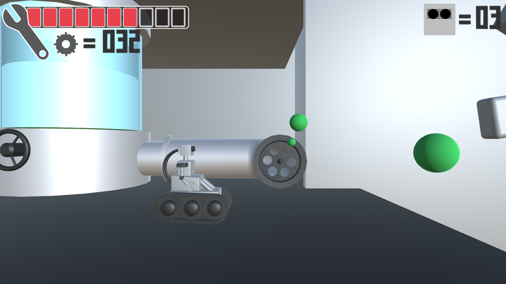

Danger Factory
Danger Factory is a 3D sidescrolling platformer where you play as a robot that has crash landed on a strange planet. He must now traverse through a dangerous factory to collect parts to rebuild his ship. You must avoid obsactles that were built to destroy anyone who tries to travel through it. Enemies are replaced by enviromental hazards.
Objective
The objective of Danger Factory is to make it through the factory while collecting parts for your ship. Each level will have five parts that will vary on difficulty of aquiring. There are gears that you collect that will act as a currency later on in the game.
Health
The player must avoid the dangerous traps and mechanisms designed to hurt them. Enemies are replaced by an array of differnt enviromental hazards, such as bombs on conveyor belts, bladed platforms and of course the deadly corrosovie bubble machine.
Interactions
The player will be able to interact with the level they are moving through. There are multiple objects that can be turned on and off. Some examples include opening lockers to get the goodies inside, activating an elevator or turning off a converyor belt producing bombs that will damge the player.